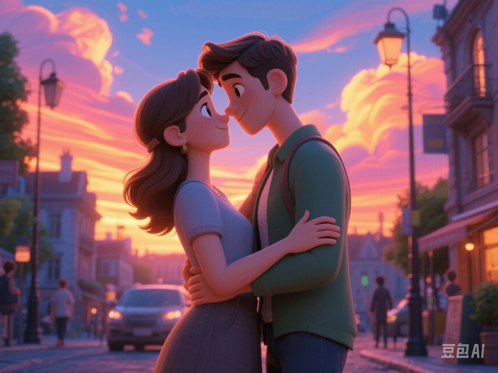

Slow Dating Is Popular: Z - Generation Loves Without Haste
PeaceLove.Top Insights :2025-04-12
🐢 Introduction
In a world full of fast - paced information, love also seems to be on 'fast - forward': one - click matching, instant replies, and quick meet - ups. However, more and more members of the Z - generation are quietly hitting the 'pause' button and starting a trend of'slow dating'.
💌 What is Slow Dating?
Slow dating is not about 'putting off dating'. It's a way of loving that rejects hasty commitment and emphasizes emotional connection. It advocates:
- 🌱 Becoming friends first and then developing into lovers.
- ⏳ Less 'casual sex' and more'resonance'.
- 📞 Taking time to chat and understand each other's values.
- ❌ Not rushing into sexual relationships.
- ❤️ Paying more attention to'spiritual compatibility' rather than 'instant intimacy'.
📉 Data Speaks: The Z - Generation Is Really Slowing Down
- A UK study found that 42% of young people aged 18 - 25 believe that 'being friends before having sex' can make a relationship last longer.
- Tinder's annual report also pointed out that the Z - generation prefers 'video calls' and 'in - depth offline chats' rather than 'immediately meeting after a quick match'.
- On TikTok, topics like #SlowDating, #EmotionallyAvailable, and #SoftLove have received over 100 million likes, showing young people's desire for deep relationships.
🧠 Why Are Young People Pursuing Slowness?
- 1️⃣ Re - evaluation of emotions after the pandemic. After a long period of isolation and uncertainty, many people realized that 'deep companionship' is far more important than 'brief excitement'.
- 2️⃣ Tired of the 'fast culture'. They've scrolled too much, chatted too quickly, and been disappointed too often. ➡️ Young people are starting to actively'slow down' and cherish truly spark - filled encounters.
- 3️⃣ Increased awareness of mental health. The Z - generation understands emotional boundaries better and values 'emotional stability' more. They don't want their studies, lives, and mental states to be affected by emotional wounds.
💬 What Do Slow - Dating Practitioners Say?
'I talked to my current boyfriend for three months before we met, but we could talk about anything. It felt like we'd known each other for years when we first met.' - @Momo, 22 years old, senior undergraduate student. 'I used to date too quickly and break up just as fast. Now I'd rather be friends first and get to know each other better.' - @Xiaoyuan, 25 years old, software engineer.
💡 How to Start a 'Slow - Dating' Relationship?
- Set a clear dating rhythm. ⏱️ Communicate with your partner that you're not after a 'whirlwind romance' and are willing to get to know each other better before deciding the direction of the relationship.
- Have multi - dimensional conversations. 🧩 Don't just have small talk. You can also discuss deeper topics like dreams, family values, and emotional management.
- Experience life together. 📸 Slow dating doesn't mean 'procrastinating'. Instead, cook, visit exhibitions, and travel together to deepen the emotional foundation through real - life interactions.
- Don't date just for sex. 💤 Respect each other's pace, don't be tied down by the'relationship progress bar', and don't use 'having sex' as the criterion for judging a relationship.
🛡️ Slow Dating ≠ Procrastination and Irresponsibility
Some people misunderstand that'slow dating' means 'leading someone on without commitment'. In fact, it's the opposite. Slow dating requires:
- ✅ Emotional maturity.
- ✅ High - quality communication.
- ✅ Mutual respect and transparent intentions. True slowness is for stability; it's not procrastination but seriousness.
❤️ Slowing Down Doesn't Mean Lack of Passion
'Slow dating' doesn't mean a lack of passion. It means being better at using time to screen for genuine feelings. In an increasingly fast - paced era, having the courage to'slow down to love someone' might just be the coolest choice. 🌿 Because we've finally understood that emotions are not 'fast food' but a soup simmered slowly - it takes time to become delicious.